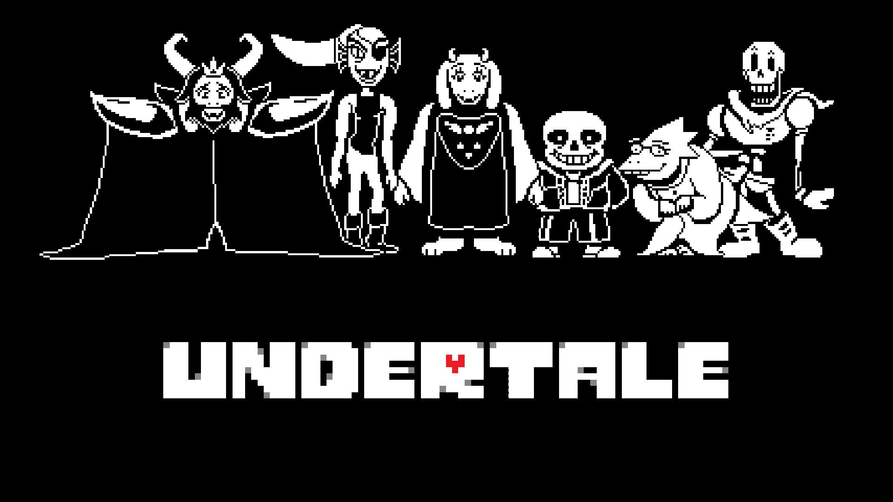
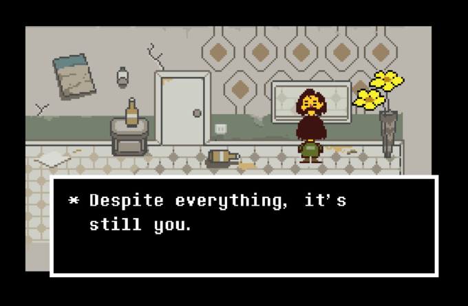

Un omagiu adus RPG-urilor clasice
O prezentare a jocului Undertale și a motivelor pentru care merită jucat.

Deși este posibil ca acest joc să fie trecut cu vederea de o bună parte dintre oameni din cauza graficii, are foarte multe de oferit. Este clar că jocul s-a inspirat mult din vechile titluri din seria Pokémon, atât din punct de vedere vizual, cât și în ceea ce privește mecanicile de joc. Modul în care poți întâlni inamici care par să apară de nicăieri sau felul în care interacționezi cu lumea sunt exemple evidente. Deși aceste elemente sunt prezente și în multe alte RPG-uri, Undertale reușește să capteze aceeași senzație pe care o oferă jocurile Pokémon. Jucând acest joc, am avut aceeași senzație pe care am simțit-o când am jucat pentru prima dată Pokémon Emerald.
Una dintre mecanicile despre care credeam că mă va deranja cel mai mult a ajuns să devină una dintre preferatele mele. În Undertale, spre deosebire de Pokémon, unde atunci când ești lovit pur și simplu îți scade viața cu un anumit număr de puncte, stabilit de puterea adversarului în comparație cu a ta, aici trebuie să joci niște minigame-uri pentru a te apăra. Înainte să cumpăr jocul mă așteptam ca acest lucru să fie enervant și plictisitor, însă este exact opusul. Aceste mici jocuri sunt suficient de dificile încât să nu poți evita la nesfârșit toate atacurile fără să fii lovit.

Partea care m-a impresionat cel mai mult este povestea. Nu voi intra în detalii pentru a nu strica experiența celor care vor să îl joace și țin să menționez că încă nu am terminat inca jocul. Povestea are la bază o temă destul de sumbră, însă toate personajele pe care le întâlnești pe parcurs sunt comice și satirice, ceea ce creează un contrast foarte interesant între lume și personaje.Din această cauză, mi se pare că unele personaje sunt cumva uitabile. Cu o parte dintre ele interacționezi o singură dată și, deși acele momente sunt amuzante și contribuie la desfășurarea poveștii, în unele cazuri cred că ar fi fost mai bine dacă anumite personaje ar fi fost refolosite în loc să fie introduse altele care, în general, au aceeași personalitate. Totuși, pot spune cu ușurință că personajele chiar au personalitate, iar asta nu reiese doar din ceea ce spun, ci, surprinzător, și din gesturile lor.Deși jocul are o grafică comparabilă cu cea a jocurilor de la începutul anilor '90, mi se pare impresionant cât de multă personalitate reușește să transmită prin detalii foarte simple. De exemplu, un personaj se întoarce ușor dintr-o parte în alta atunci când ceva nu merge așa cum a planificat sau face alte gesturi subtile care adaugă foarte mult farmec.
Ca o scurtă concluzie, recomand Undertale oricui își dorește să joace un RPG în stilul clasic. Nu vă lăsați păcăliți de grafică, deoarece jocul are foarte multe de oferit. Povestea este principala atracție a acestui joc, iar dacă sunteți în căutarea unui RPG cu o poveste interesantă și personaje comice, Undertale este alegerea potrivită.